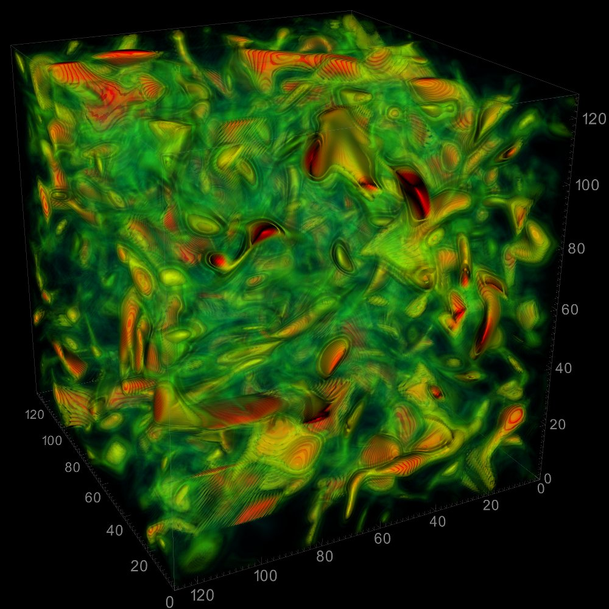

Instantaneous visualization of the enstrophy distribution in a compressible, homogeneous isotropic turbulent field. Enstrophy is an important property of a turbulent field, affecting how turbulence is dissipated. We are interested in the effect of compressibility through shocks, which adds the effect of pressure and density gradient (so-called baroclinic torque), to the enstrophy distribution, straining the turbulent field. We are also interested in a fundamental problem of the interaction between a detonation wave and a turbulent field, which is affected by chemistry.
[Data courtesy of Frank Lu, Mechanical and Aerospace Engineering Department, University of Texas at Arlington.]